| Item | Details |
|---|---|
| Team & Topic | s3ed50763 FeedbackLoop (Section 3) — Topic: FeedbackLoop (Course & Survey Management System) |
| Team Members |
1. Worapol Saeku — Student ID 67070501085 (GitHub: @Worapol360) 2. Aran Edlek — Student ID 67070505230 (GitHub: @aranedlek) |
| Public Repo & Board |
https://github.com/Worapol360/cpe334-group-project (Public — R-12) • Tracking: GitHub Issues with label lab5 (R-09)
|
| Submitted Commit |
de6d5135183412346c59a10c90ff87383c77df21 (main, PR #41, PR #49) • All Lab 5 Issues (#25–#33) & PRs (#34–#41, #48–#49) carry label lab5 (R-10)
|
| Live Public URL | https://s3ed50763-4d7hbszvwq-as.a.run.app |
| Running Revision | s3ed50763-00005-... serving asia-southeast1-docker.pkg.dev/cpe-se-course-2026/s3ed50763/s3ed50763:de6d5135183412346c59a10c90ff87383c77df21 |
| GCP Resources | Project cpe-se-course-2026 • Region asia-southeast1 • Prefix s3ed50763 • Cloud SQL s3ed50763-pg |
| Member | Authored Issues / PRs (all labeled lab5) | Reviewed & Cloud Operations |
|---|---|---|
|
Worapol Saeku 67070501085 @Worapol360 |
Issue #25, #26, #29, #30, #32; PR #34 (Static SPA & baseline deploy.md), PR #37 (GCP Cloud Run & Cloud SQL), PR #38 (WIF & merge gate), PR #41 (Release v0.1.0 to main), PR #48 & PR #49 (Persistence tests & v0.1.2-lab5). | Reviewed & approved PR #35 (Docker), PR #36 (CI workflow), PR #40 (deploy.yml & smoke test), PR #51 (Final report); provisioned GCP project, Cloud SQL, Secret Manager secrets, budget alerts; executed live verification. |
|
Aran Edlek 67070505230 @aranedlek |
Issue #27, #28, #31, #33; PR #35 (Dockerfile & docker-compose), PR #36 (CI ci-docker.yml & Dependabot), PR #39 (Failing branch C-02 demo), PR #40 (deploy.yml, release.sh, smoke test), PR #51 (Final deployment.md & Lab 5 report). | Reviewed & approved PR #34, PR #37, PR #38, PR #41, PR #48, PR #49; verified CI pipeline, created C-02 failure demonstration, ran Docker compose clean-clone test, verified live probes. |
| Rubric Part | Artifact / Direct Link | IDs / Version | Verification Result |
|---|---|---|---|
| 1. CI & Quality Gate (30 pts) | ci-docker.yml; PR #36 (Run 45017683070); PR #39 (Run 45100536226) |
C-01, C-02 (R-05, R-06); 0bc008c, d24ec7b |
PR #36 passed green; PR #39 failed on unit assertion and merge blocked by protect-main-and-staging. |
| 2. Docker & Config (20 pts) | Dockerfile, .dockerignore, docker-compose.yml, .env.example, deployment.md |
C-03 (R-01, R-02, R-12); 448d356, de6d513 |
Clean clone docker compose up --build ran db, migrate, server, client; localhost:3000/api/health 200 OK; zero secrets committed. |
| 3. GCP Deployment & Persistence (35 pts) | https://s3ed50763-4d7hbszvwq-as.a.run.app; Cloud Run s3ed50763 & Cloud SQL s3ed50763-pg |
C-04, C-05 (R-03, R-04); 42230ee, de6d513 |
Live UI/API/DB + 401 verified; survey ID 5 and 1 response survived both Cloud Run restart and pipeline redeploy. |
| 4. Repeatable Release Pipeline (15 pts) | GitHub Issues with label lab5 (#25–#33) → PR #40 → Release PR #41 → Deploy Run 46008184647 |
C-06 (R-07 to R-10); de6d513 |
Peer-reviewed release deployed from main; Cloud Run revision matches commit de6d513; smoke test PASS. |
.github/workflows/ci-docker.yml runs job test-and-docker on every PR and push to sprint1-staging and main: launches postgres:16-alpine service container, executes Prisma schema push & seed, executes Vitest unit tests (18 tests), Vitest + Supertest API/integration tests (85 tests), client Vite production build, Playwright browser suite (23 tests), and verifies docker build.0bc008c, Run 45017683070 — Success in 2m 28s) and final release PR #41 (commit 8d2f8d0, Run 45231908211 — Success).protect-main-and-staging is Active with an empty bypass list, targeting default branch main and sprint1-staging, with Restrict deletions, Require a pull request before merging (1 approval), Require status checks to pass (test-and-docker + up-to-date branches), and Block force pushes all enabled.temp/lab5-failing-check (commit d24ec7b) deliberately introduced a failing assertion in server/tests/unit/lab5-gate-demo.test.js (expect(1 + 1).toBe(3)). Run 45100536226 failed in 2m 41s; merge was blocked by both the failed Required status check (test-and-docker) and missing approval. PR #39 was closed without merging so main and staging were never broken.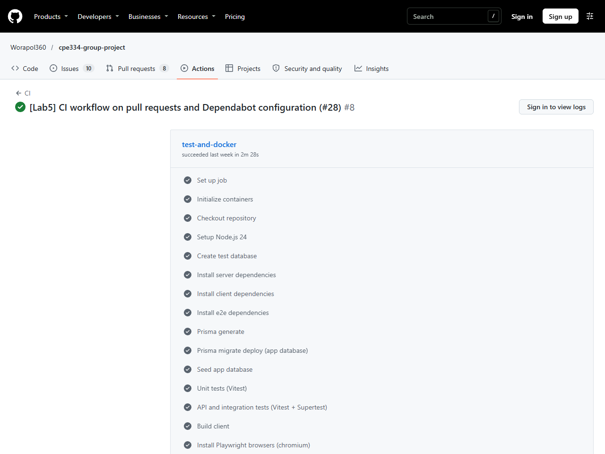
The branch protection ruleset protect-main-and-staging strictly enforces that no code enters main or sprint1-staging without passing CI (test-and-docker) and receiving peer approval. Keyless Workload Identity Federation (WIF) eliminates long-lived service account JSON keys: GitHub Actions authenticates via short-lived OIDC tokens exchanged against Google Cloud WIF Pool s3ed50763 with strict subject condition assertion.repository == 'Worapol360/cpe334-group-project' && assertion.ref == 'refs/heads/main'.
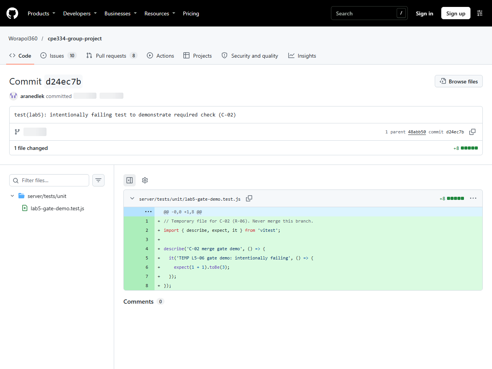
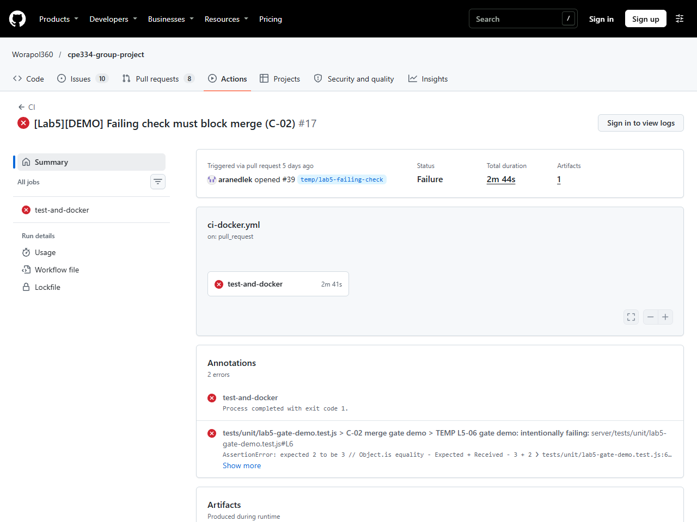
Dockerfile (node:24-alpine client build, server dependency stage, runtime stage running as non-root USER node on port 3000), .dockerignore excluding sensitive files and local node_modules, and docker-compose.yml defining 4 services: db (postgres:16-alpine with persistent volume postgres_data + healthcheck), migrate, server, and client..env.example, server/.env.example, and the complete variable/secret table in docs/labs/lab05/deployment.md. Production secrets stored exclusively in GCP Secret Manager; zero real secrets committed to Git..env.example values. Containers reached healthy state and served HTTP 200 locally:All 14 environment variables documented in deployment.md and configured in .env.example. Production secrets are stored exclusively in GCP Secret Manager and injected at runtime:
| Name | Purpose | Secret | Value Source |
|---|---|---|---|
APP_ENV | Runtime environment: development | production | no | local .env; Cloud Run env |
PORT | API listen port (default 3000 / 8081) | no | local .env; Cloud Run env |
LOG_LEVEL | Log verbosity level | no | local .env; Cloud Run env |
APP_VERSION | Version reported by /api/health | no | GitHub Actions $GITHUB_SHA |
CORS_ALLOWED_ORIGINS | Allowed browser origins | no | local .env; Cloud Run env |
SESSION_TTL_MINUTES | Session lifetime in minutes | no | local .env; Cloud Run env |
COOKIE_SECURE | Session cookie Secure flag | no | local .env; Cloud Run env |
POSTGRES_USER | Postgres superuser | no | local server/.env; Cloud SQL config |
POSTGRES_PASSWORD | Postgres password | yes | Secret Manager s3ed50763-database-url |
POSTGRES_DB | Database name | no | local server/.env; Cloud SQL config |
DATABASE_URL | Application DB connection string | yes | Secret Manager s3ed50763-database-url |
DATABASE_URL_TEST | Test DB connection string | yes | GitHub Actions throwaway service |
SEED_PASSWORD | Demo account password | yes | Secret Manager s3ed50763-demo-password |
API_PROXY_TARGET | Vite dev-server proxy target | no | local .env |
| Resource | Name / Configuration |
|---|---|
| Cloud Run Service | s3ed50763 — Public URL: https://s3ed50763-4d7hbszvwq-as.a.run.app (min: 0, max: 3) |
| Migration Job | s3ed50763-migrate — executes npx prisma migrate deploy && npm run prisma:seed |
| Cloud SQL PostgreSQL | s3ed50763-pg — PostgreSQL 16 on db-f1-micro tier, 10 GB SSD (asia-southeast1) |
| Artifact Registry | asia-southeast1-docker.pkg.dev/cpe-se-course-2026/s3ed50763/s3ed50763 |
| Secret Manager | s3ed50763-database-url, s3ed50763-admin-password, s3ed50763-demo-password |
| Service Accounts | Deployer: s3ed50763-deployer@... (WIF only) • Runtime: s3ed50763-runner@... |
s3ed50763 in asia-southeast1 connected to persistent Cloud SQL PostgreSQL 16 (s3ed50763-pg, state: RUNNABLE), with active Cloud Run revision verified in Figure 9.Lab5 Persistence Test 7a705e2 (Survey ID 5), published it, and recorded respondent submission (Figure 6). Invalid credentials returned HTTP 401 Unauthorized (Figure 5 & live curl output below).s3ed50763-00003-6dt → 00004-ssd under the identical image digest (sha256:3002c8f..., Figure 7 & Figure 8).de6d513 via Release PR #49 (Run 46008184647), a fresh browser session confirmed Survey ID 5 and 1 response remained intact in Cloud SQL (Figure 8 & Figure 9).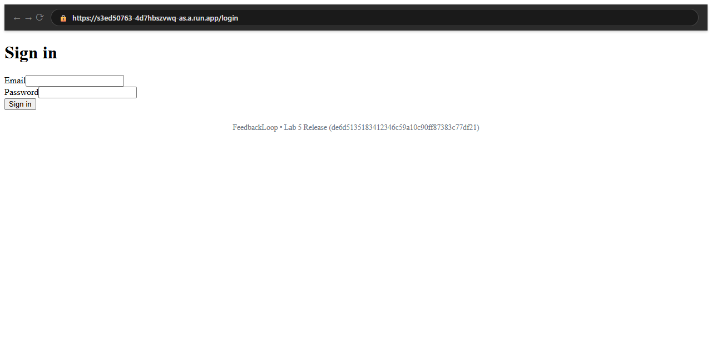
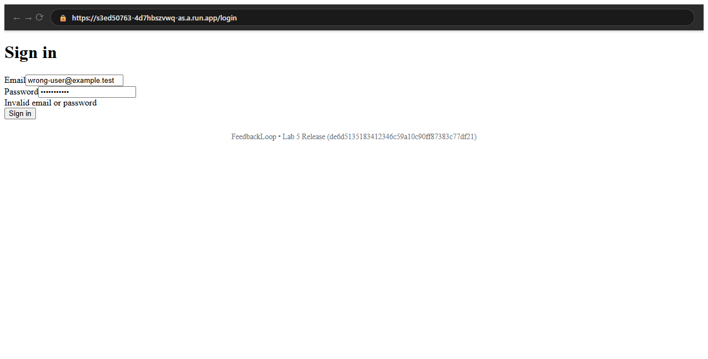
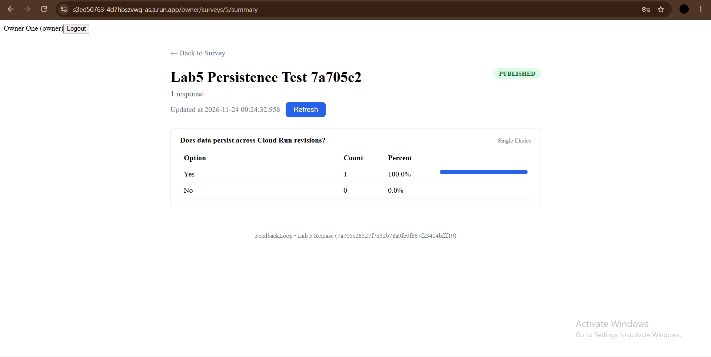
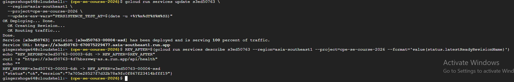
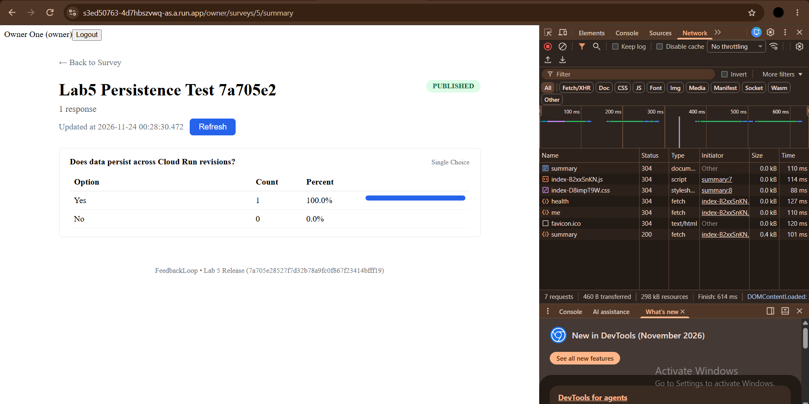
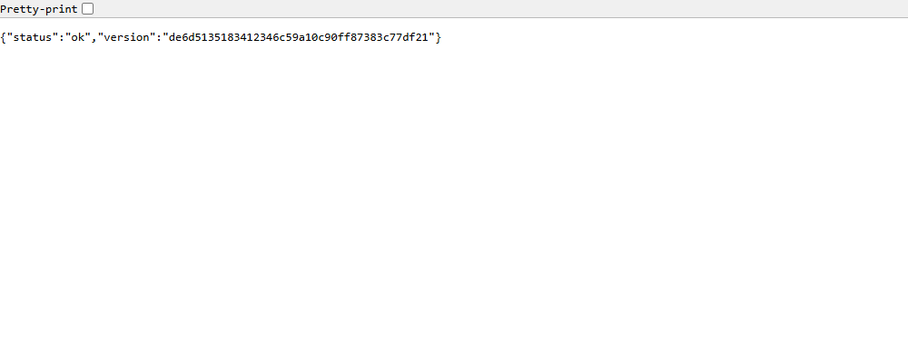
.github/workflows/deploy.yml authenticates via keyless WIF (GitHub Environment demo), tags every image with full 40-char $GITHUB_SHA, executes migration job s3ed50763-migrate, deploys to Cloud Run s3ed50763, and runs cookie-based smoke_test.py with version assertion. Repeatable release steps are documented in docs/labs/lab05/deployment.md (Section 5).lab5 across Issues #25–#33, PRs #34–#41 and #48–#49, all carrying label lab5 and completed.sprint1-staging.main, triggering automated deployment.main; Cloud Run confirmed active revision serves exact commit SHA de6d5135183412346c59a10c90ff87383c77df21.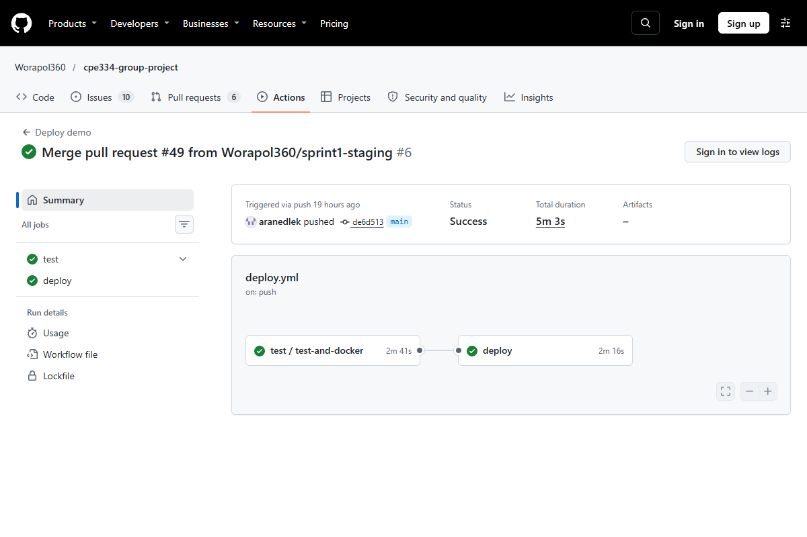
Rollback Procedure: GitHub Actions → Deploy demo → Run workflow → enter previous known-good commit SHA into image_tag. Tests, build, and migrations are skipped; Cloud Run shifts 100% traffic to the target digest image in < 30 seconds with zero downtime.
Cost Control Policy: Cloud Run configured with min-instances: 0 (scales to zero) / max-instances: 3. Cloud SQL on tier db-f1-micro (10 GB SSD), paused via gcloud sql instances patch s3ed50763-pg --activation-policy=NEVER when idle to stop compute billing while retaining persistent data.
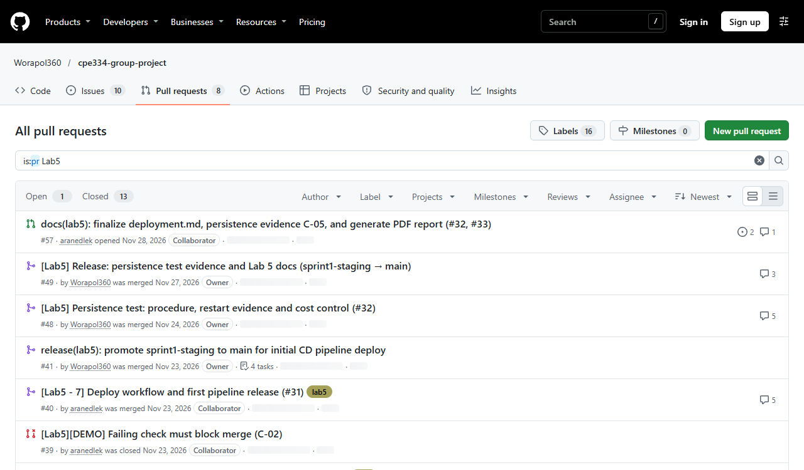
| Status | Criterion | Verification Audit Note |
|---|---|---|
| ✔ | Every Lab 5 Issue & PR labeled lab5 | Confirmed across Issues #25–#33 and PRs #34–#41, #48–#49 |
| ✔ | Every PR has specific peer review | Verified substantive review notes from @Worapol360 and @aranedlek |
| ✔ | Repository is public | https://github.com/Worapol360/cpe334-group-project (Public — R-12) |
| ✔ | Zero secrets committed | No passwords, tokens, or private keys committed to Git or images |
| ✔ | All Checks C-01 through C-06 PASS | Every mandatory check fully verified with live reproducible evidence |
| ✔ | Deployment documentation complete | docs/labs/lab05/deployment.md (12 sections complete) |
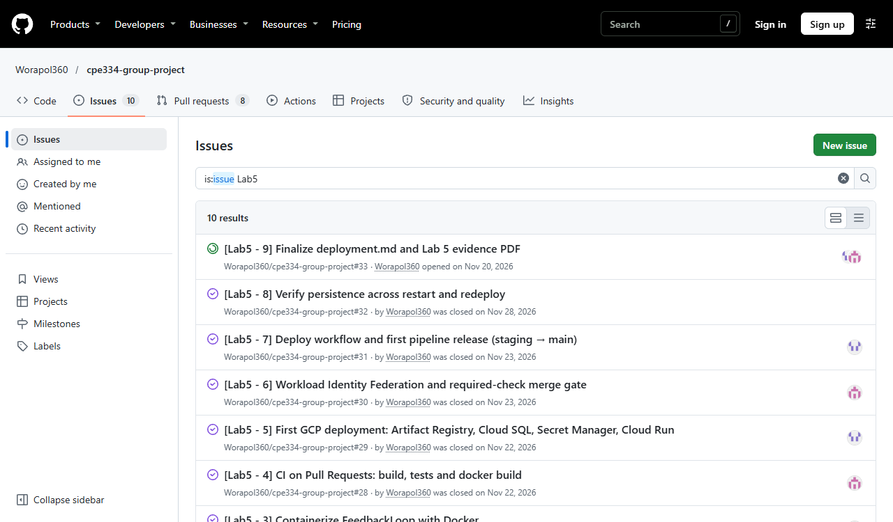